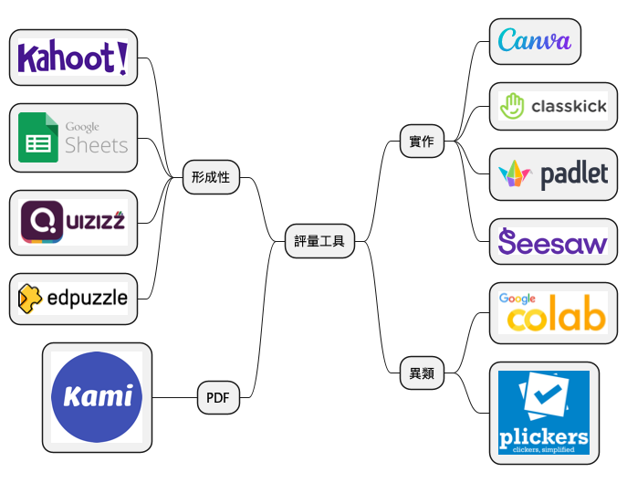
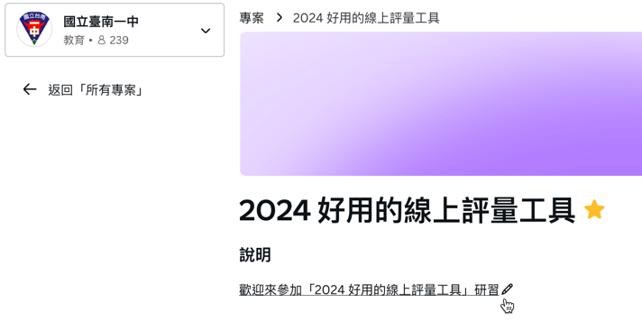
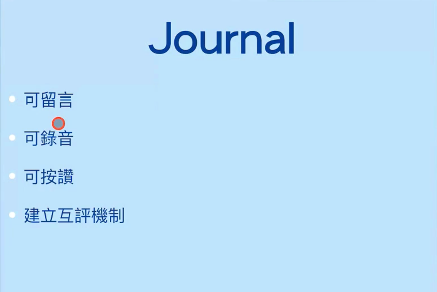
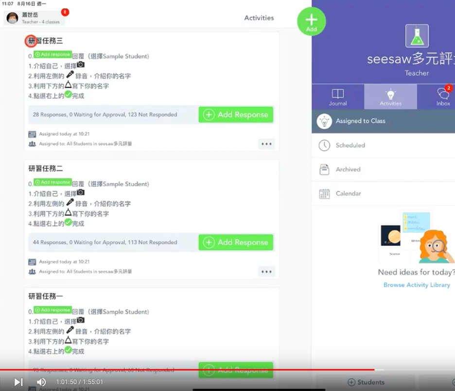

20240508-好用的線上評量工具
Table of Contents

1. 研習內容
- 系列研習: 數位教學與評量應用增能研習2
- 時間： 113年5月8日 13:30~16:30
- 180分鐘: 數位教學與評量工具介紹(50分鐘) + 教學評量案例分享(90分鐘)
- 對象: 高雄市公私立國中教師，預估25人
1.1. 課表

Figure 1: 課程表
1.2. 前置作業
1.2.1. 評量工具使用經驗調查
1.2.2. 登入: Google Classroom
- 課程代碼：yzgqt27
- 邀請連結: https://classroom.google.com/c/Njc3OTQ5Nzk3NjY3?cjc=yzgqt27
1.2.3. 投影片下載
- 我是這次研習的投影片
2. 評量工具使用體驗: 前台/學生視角
2.1. 以Google Classroom為基礎的線上評量工具

2.2. 形成性評量
2.2.1. Kahoot!
- 即時呈現學生排名
- 可設定每題作答時間，方便教師控制節奏
- 免費版: 50人
- 只有單選：複選要付費
- 可輸入數學公式
- 可以搜尋其他人做的測驗，建立複本
2.2.2. Quizizz [Google Classroom]
特色
- from 印度
- 有10個預設題庫
- 提供各種公式工具
- 可以一面自編、一面搜尋線上題庫加入測驗
中文版的翻譯有問題
- 免費版功能有限
體驗
- Google Classroom
- Start now - paper mode
2.2.3. Google表單 [Google Classroom]
- 題型自由度最高
- 免費
- 可同步分數至Google Classroom
- 可以限制學生網域
- 有後台提供測驗結果分析
- 缺乏趣味性
2.2.4. Edpuzzle [Google Classroom]
- 結合影片進行測驗
- 可重新錄音功能
- 分數可傳回Google Classroom
- 測驗類型較少(只有選擇、簡答)
- 免費版影片容量20支(每邀請一位老師能增加3支影片的容量)
學生體驗
- Google Classroom / 登入
- 點選Edpuzzle影片作業逐一完成
最後要點選Submit，分數才會同步至Google Classroom
學生看到的作業
2.3. 實作評量
2.3.1. Canva
- 網址: https://www.canva.com/
- Canva除了可以當作教學簡報來使用外，也可以做出豐富的教學影片、Facebook貼文，或是與Google Classroom做結合，在建立作業、張貼公告、建立教材等方面都很容易操作。另外，在班級經營方面，則可以製作精美的時間表、班級公約、座位表等。
優點
- 使用者友好性: Canva的拖放界面直觀易用，使得即便是沒有設計經驗的使用者也能輕鬆創建專業外觀的設計。
- 豐富的模板和資源: 提供各種專業設計的模板和大量的圖庫資源，方便使用者快速開始並創建吸引人的設計。
- 協作功能: 支持多人協作，適合教育團隊和班級活動。
- 成本效益: 提供免費版本，對於預算有限的教育工作者和學生來說是一個很好的選擇。
缺點
- 有限的自訂功能: 雖然Canva非常多功能，但它不提供像專業圖形設計軟件那樣的細微調整和自定義選項。
- 依賴網絡: 作為一個網頁平台，使用Canva需要穩定的網絡連接，這在網絡連接不佳的情況下可能是一個問題。
- 教育資源可能過於豐富: 對於學生來說，豐富的設計選項和內容可能會造成分心或感到不知從何開始。
- 與Google Classroom的整合有限
體驗
- 由Google Classroom訊息串點選加入Canva課程連結(Signup to Canva)
- Continue with Google: 以Google帳號登入Canva Education
- 出現歡迎畫面
- 寫作業
- 使用範本建立新設計
- 右上角「分享」- Google Classroom-選擇課程-選擇作業-附加-查看作業-繳交
- 以範本編輯自己的作業 - 「使用此範本」
- 交作業
完成後，按一下編輯器選單
- 右上角「分享」。
- 選取「Google Classroom」。如果看不到此功能，請按一下「
- 更多」，然後選取「Google Classroom」。
- 選取要送出的班級，然後選取作業。
- 按一下「附加」以附加設計。
- 按一下「檢視作業」前往Google Classroom並上交作業。
- 右上角「分享」。
- 使用範本建立新設計
2.3.2. Classkick
- 網址: https://classkick.com/
- Classkick是由美國高中老師研發的免費即時反饋評量app，提供師生和同儕之間教學、學習、評量、反饋的電子白板工具。讓老師結合學習單、圖片、網頁、聲音、和影片，建立無紙化的數位學習環境。
- 不同於其他的即時反饋與評量的軟體，大多只能出選擇題，頂多再加上填充題、問答題和畫圖的功能，Classkick讓學生能用文字和畫筆回答問題、完成作業。在安排作業內容的時候，教師可以從各式各樣的資源，比如學習單、網頁，截屏來創建數位學習單和題組，在題目裡加上圖片、影像或聲音做為教學和答題輔助。
- 學生以班級碼(Class Code)和姓名登入Classkick之後，在老師出的題目頁面上，用不同顏色的畫筆寫字或打字輸入答案。學生螢幕左下角有一個「手掌」的圖形，遇到不會的題目，或是作答完畢，就可以舉手求助(Please Help)，或是告訴老師已經作答完畢(Please Check My Work)。
- 除了由老師來訂正、協助、給回饋之外，Classkick設計了學生互助的機制。首先老師可以決定要不要開放此項功能，勾選開放之後，一旦有學生求救，其他學生也會收到通知。Classkick很貼心的設計是，助人的學生不會知道求助的學生是誰，求助通知是以動物頭像呈現，而受幫助的學生則會收到通知是誰來幫助他。
- 另一項老師可以掌控學生的功能是，學生只要一離開這個程式，學生所在的那一列會轉為灰色，老師立刻知道學生已經關閉程式，可以提醒他重新開啟，如此一來可以防止學生分心去從事其他活動。
- 學生作答的頁面即使在學生登出之後，依然保留在Classkick的伺服器中，方便老師可以隨時詳細檢視或評分。
- 可以用來收線上作業(多元聽說讀寫活動與評量)
- 每個活動還可以設定成績,讓電腦自動批改, 也可以設定手動批改。
- 學生登入方便, 也可派發至Google classroom
體驗(適合以平板或手機作答)
- 先登入(https://classkick.com/)Login as Students
- 點選作業/完成作業
- 可以先將作業存成PDF(備份用)
- 直接結束APP或Logout
2.3.3. Seesaw
- https://web.seesaw.me/
- seesaw一個班最多150個人?
- 如何新增班級?可否由classroom匯入?
- 免費:10個班
- 沒有空間限制
- 平台版面清楚，有類似臉書社交網站互動功能老師可以發布課程所需教學檔案，
- 學生可以上傳個人作業、小組作業，類別包含有：錄影、錄音、拍照、畫圖、筆記、小白板、網站連結等，學生還能夠以此做為個人課程的學習記錄，平台亦提供社交功能，如按讚(愛心圖示)、互給回饋、留言平台能保存學生上傳的各式學習資料，老師能將學生的資料用PDF格式下載存檔
- 可建立班級
- 學生可以代號或QR code登入
- 點選新增作品按鈕後，可選擇上傳的類別，如：靜態的相片、動態錄影，檔案也能整合google…等雲端硬碟，也可隨手塗鴉
- Journal：類似動態牆
- Activities：適用於教師指定活動或作業，教師可以看見學生繳交的情況，Activities中有內建一些學習活動，可以直接指派給班級學生進行練習(或當成指定作業)
- Blog：可以張貼與課程的相關的內容(此功能需由教師於Class Settings中開起，Blog需由教師開起才會顯示，如：至Class Settings中開起Blog功能，並設定Blog名稱為“infotech”,完成後此Blog網址就為：https://blog.seesaw.me/infotech
- INBOX: 可查看平台的通知訊息(包含各個活動記錄，按照時間序列顯示
2.3.4. Padlet
2.4. PDF-based
2.4.1. kami [Google Classroom]
Kami是一款適用於各個瀏覽器的文檔閱讀編輯工具，可使用的檔案類型包括常用的Word、Powerpoint與PDF，提供線上編輯、註解，甚至在文檔內加入語音、錄影、Youtube等多媒體回饋，藉由這些方便使用的互動教學功能，師生可以使用Kami作為閱讀和筆記工具，大幅減少學校紙本與印刷成本，通過瀏覽器就能實現教學閱讀與交流分享，教師可以與學生同時共編並與Google應用無縫協作，最後彙整出每一位使用者的行為數據，作為教師評分的參考依據，大幅節省教師寶貴的時間，一併解決「收發功課容易，改功課難」的線上課程長期問題。
2.5. 異類
- colab [Google Classroom]
- plickers
3. AI輔助出題
這裡要討論的不是「康軒出題高手」或是「翰林雲端命題大師」

3.1. 類型
- 問答式: ChatGPT 3.5, perplexity, ChatGPT 4
- 檔案式: ChatDOC, ChatGPT 4
- 影片式: ChatTube
- 網頁式: ChatDOC, ChatGPT 4
3.2. 素材
3.2.3. 網頁
3.3. ChatGPT 3.5
3.4. ChatDOC
- 網址: https://chatdoc.com
- 支援格式: pdf, doc, docx, markdown, epub, txt, website, OCR
上傳課文PDF
try #1
出五題和課本有關的選擇題，附上答案與解析
try #2
出5題選擇題評量學生對這篇課文的理解能力，附上答案與解析
try #3
出5題 單選題 評量學生對這篇課文的理解能力，附上答案與解析
紙本教材
先掃瞄或拍照、以Google Docs開啟、辨識成文字
3.5. ChatTube
3.5.1. try #1
請根據這則故事生成4題選擇
3.5.2. try #2
請依據這則故事生成4題選擇題，並標註每一題的內容是從故事的第幾分鐘到第幾分鐘取得
3.6. Perplexity.ai
3.6.1. 檔案
3.6.2. 影片
https://www.youtube.com/watch?si=lcQmN8R67ekkASp1&v=kEE4jDKN7iw&feature=youtu.be 根據這篇故事生成5題選擇題來評量學生對於故事內容與意義的理解程度
3.7. ChatGPT 4.0
3.7.1. 檔案
try
出5題選擇題評量學生對這篇課文的理解能力，附上答案與解析
3.7.2. 影片
https://www.youtube.com/watch?si=lcQmN8R67ekkASp1&v=kEE4jDKN7iw&feature=youtu.be 根據這篇故事生成5題選擇題來評量學生對於故事內容與意義的理解程度
3.7.3. 網頁
https://spot.line.me/article/SPOT-0dfc6d17-b120-4814-84f2-23126aab93e8 根據這個網頁生成10題有關古蹟的選擇題，評量對象是小學生，請以平易的文字來表達。
3.7.4. 圖片生成
3.8. 民意調查
依據大家的感興趣程度排列後台體驗順序
4. 評量工具設計體驗: 後台/教師視角
4.1. 準備
- 開啟兩個瀏覽器: Edge, Firefox, Google Chrome
- 分別登入兩個Google帳號: 學生, 教師
4.2. Kahoot!
- 題目及選項都有字數限制
- 可以利用Powerpoint製作動畫，轉為GIF，在題目中製作動畫
- 可以由csv來批次上傳測驗內容
- 測驗也以加入投影片，要複雜版型要付費（也可以由powerpoint先製作好投影片，然後轉為圖片再插入基本的版型)
- 可以透過主題來讓測驗背景更生動
- 可以當成平常成績，或是依比賽結果來當加分依據
- 除了在課堂即時實施，也可以指派為作業
支援題型
/2023-09-14_20-09-34_2023-09-14_20-09-07.png)
Figure 2: Kahoot!支援題型
測驗類型
- 經典
- 組隊
/2023-09-14_21-31-34_2023-09-14_20-53-18.png)
Figure 3: 標題
- 經典
4.3. Quizizz
- 網址: https://quizizz.com
- 可以由各出版社的題庫光碟匯出csv檔中匯入題目
- 部份出版社也有提供Quizizz題庫分享
- 翰林行動大師-線上版-國小&國中-領域-數位便利貼-Quizizz
- 康軒國小Quizizz平台
- 康軒國中Quizizz平台
- 翰林行動大師-線上版-國小&國中-領域-數位便利貼-Quizizz
- 也可於Quizizz題庫搜尋
4.3.1. 編輯、實施測驗
- Login with Google
[教師]連結Google Classroom
- 左側: Classes
- Import a new class from Google Classroom / Canvas / Schoology
[教師]建立測驗


[學生]參加作業
可由Google Classroom 看到定時測驗

[教師]查看測驗結果
可依個人/試題分析作答表現
4.3.2. 遊戲模式 v.s. 測驗類型
遊戲模式
- Team:學生各自答題，但得分來自整組表現
- Classic：學生各自答題，得分也是獨立計算
- Test：作答期間沒有額外的圖，且學生需要登入才能作答
測驗類型
- Classic: 即時測驗，自己控制進度
- Instructor-paced: 由教師控制進度，適用時機: 教師師廣播題目，學生以電腦或手機、平板作答，全班同步
4.4. Googleq表單測驗
4.4.1. [教師建立測驗]
- Google: 國小 測驗 google 表單
- https://secure.smore.com/n/zcdnf-google
- 點選連結、建立複本
- Google classroom建立測驗作業
- 若勾選「CHROMEBOOK鎖定模式」，學生只能以「和教師同一機構的GMail」身份登入後作答
4.5. Edpuzzle:
4.5.1. 特色
Edpuzzle 是一個線上平台，它允許教師將影片轉化為互動學習工具，這對教學評量來說帶來了獨特的優勢。以下是使用 Edpuzzle 在教學評量上的一些特色：
- 影片客製化:Edpuzzle 允許教師選擇現有的影片（例如來自 YouTube、Khan Academy 等），或上傳自己的影片，並直接在影片中嵌入問題。這種方法可以將影片轉變為一種互動式學習體驗，其中包括選擇題、填空題和開放式問題。
- 互動評估: 通過在影片的特定時刻插入評估問題，Edpuzzle 強化了學習的互動性。當學生達到影片中的一個問題點時，影片會自動暫停，要求學生回答問題才能繼續觀看。這促使學生更專注於內容並即時應用他們的知識。
- 即時反饋: 學生在回答嵌入影片的問題後，可以立即收到反饋。這有助於他們理解自己在哪些部分掌握得好，哪些部分需要進一步學習。
- 進度追蹤和分析: Edpuzzle 提供詳細的分析功能，教師可以看到哪些學生已經觀看了影片，他們在哪裡遇到困難，以及他們對問題的回答情況。這有助於教師理解學生的學習進度，並根據需要提供針對性的支持。
- 差異化教學: 教師可以根據每個學生的學習進度和需求，對影片進行個性化調整。例如，可以為需要額外幫助的學生提供更多的資源鏈接，或者為高級學生設置更具挑戰性的問題。
- 融入課堂和家庭學習: Edpuzzle 能夠靈活運用於課堂教學中或作為家庭作業。這使得學習可以在課堂外延續，同時也支持翻轉課堂模式，其中學生在家預習新材料，而在課堂上進行深入討論和應用。
- 免費版最多20段影片
4.5.2. 影片與翻轉學習1
- 影片是翻轉學習的重要面向，可以適時發揮單向教學的價值，但不是最重要的。影片應該用來當做翻轉學習的入口，而更深、更廣的學習可以從這裡開始。翻轉會失敗，有幾個最常見原因：
- 影片太長：影片長度的黃金比例是「年級×一～一．五分」。也就是錄給四年級生的影片，不宜超過四～六分鐘；錄給十年級生的影片應控制在十～十五分鐘，超過半小時以上，學生會覺得有負擔。
- 沒有教學生如何看影片：老師需要事先教學生「如何看影片」，這不是被動的過程，有老師甚至會設計摘要格式或工具，幫助學生明白看影片自己需完成的任務，如：觀賞－摘要－提問。
- 未讓學生承擔不預習的後果：學生沒有看影片就來到教室，老師幫忙挽救，讓學生覺得在家不預習也無妨，也很難翻轉。
- 影片太長：影片長度的黃金比例是「年級×一～一．五分」。也就是錄給四年級生的影片，不宜超過四～六分鐘；錄給十年級生的影片應控制在十～十五分鐘，超過半小時以上，學生會覺得有負擔。
- 根據我八年的觀察與經驗，老師必須持續翻轉至少三年，才會看到成果。理由很簡單，翻轉就像是建立文化，不會一、兩天就看到結果。第一年最累、最難，因為老師和學生都在調適；第二年老師會花很多力氣在調整教學布局與細節上；第三年，當基礎建設都穩固，很多事得以順利運作，有意義的學習情境發生頻率變高，學生和老師才會感受到翻轉學習對彼此的好處，適應主動學習的文化。
4.5.3. [教師]編輯互動影片
連結Google Classroom
- 左側工具列: My Classes +
+ Crecate class / Google Classroom / Connect your class / Import classes
加入互動影片
- 左側工具列: My Content
- + Add Content
- 搜尋 Youtube : 佳佳老師 周處除三害
Copy: Copy Video to Content
- 回到 My Content, 點選copy後的影片
- Edit: Edit and create you own version
Question: 目前支援三種題型
- Finish
Assign to Class
- Assign
- 設定相關屬性
- 右上角Assign
4.5.4. [學生]作答
- Google Classroom / 登入
- 點選Edpuzzle影片作業逐一完成
最後要點選Submit，分數才會同步至Google Classroom
學生看到的作業
4.5.5. [教師]觀察作答結果
教師在Google Classroom看到的成績
- 於EdPuzzle可以看到以[Student/Questions]為主的學生表現分析
4.5.7. 影片長度的問題
- 針對國小1-6年級學生的教學影片長度，有一種普遍的指導原則是將學生的年級數乘以五分鐘。這個規則基於兒童隨年齡增長而增加的注意力持續時間。
- 教師和內容創作者會考慮以下因素來決定影片長度：
- 學生的年齡和注意力跨度：年齡越小的學生通常注意力持續時間較短。
- 教學內容的複雜性：較簡單的主題或活動可能不需要很長的時間。
- 教學目標：影片的教學目標也會影響所需的時間長度。例如，引入一個概念可能只需要短短幾分鐘，而深入探討一個主題則可能需要更長的時間。
- 互動和參與性：包括問題解答、互動式活動或討論可以讓學生更投入，從而可能延長他們的注意力持續時間。
- 學生的年齡和注意力跨度：年齡越小的學生通常注意力持續時間較短。
4.6. Canva
4.6.1. [教師]建立班級
新增到哪裡去了?
新增的班級會出現在「已標記星號」(專案)中
也可以到「個人-設定-班級(左側工具欄)」查看
加入課程說明

4.6.2. Google Classroom 作業
[教師]發佈作業
- 首頁
- 點選左側課程名稱
- 先新增一個設計: 右上角「+新增」- 「+建立新設計」
- 可以從左側以關鍵字搜尋樣本
- 右上角「分享」: Google Classroom - 選擇課程 - 建立作業 - 標題 - 截止日期
[學生]寫作業
- 使用範本建立新設計
- 以範本編輯自己的作業 - 「使用此範本」
- 交作業
完成後，按一下編輯器選單
- 右上角「分享」。
- 選取「Google Classroom」。如果看不到此功能，請按一下「
- 更多」，然後選取「Google Classroom」。
- 選取要送出的班級，然後選取作業。
- 按一下「附加」以附加設計。
- 按一下「檢視作業」前往Google Classroom並上交作業。
- 右上角「分享」。
[教師]查看作業/評分
- Google Classroom - 查看作業(無法預覽,只能逐一開啟) - 評分 - 註解 - 發還
[學生]收作業
- 看分數
- 看留言
4.6.3. Canva 作業
[教師]發佈作業
- 首頁
- 點選左側課程
- 將活動新增至你的課堂
- 建立新設計: 設計範本
- 右上角「分享」: 作業 - 選擇學生提交作業的位置(Canva) - 發佈
[學生]寫作業
- 學生看到小鈴鐺(右上角)，也可以從「專案-資料夾」找到課程，看到作業
- 依範本完成作業
- 右上角「完成課程」- 分享教師 -
[教師]查看作業/評分
- 教師看到小鈴鐺(右上角)
- 完成審查
- 可由左側「課堂作業」查看所有學生的作業繳交情形
[學生]收作業
- 學生看到小鈴鐺(右上角)，也可以從左側「課堂作業」找到發回作業
- 查看教師意見留言
4.7. Classkick
4.7.1. 作業
[教師]發佈作業
- Signup for free - Teachers - 以教師Google帳號登入(若無反應則選擇SIGN UP)
- 右上角 +
- Create From File
- 開啟作業檔案(自行搜尋或下載習作:第九課習作)
- IMPORT ALl PAGES
- 填寫科目、年級、存取權限(是否對外分享)、描述
- 刪掉3,4,5頁(每頁縮圖右下角「垂直三點)-Delete)
- 加兩頁空白
- 每頁加入批改方式(手動批改或自動批改)及該頁總分(右上角Pts)
- 第一頁加填空和音檔上傳說明
填空: Add Fill in the blank - Add acceptable answer - Set Points
- 每頁的右上角都有「Student Preview」，可以學生身份試答，看到即時分數
- 重組 - Add Manipulative
- 文字圖產生器: https://memes.tw/text-meme/maker
點選 Add Manipulative
- 文字圖產生器: https://memes.tw/text-meme/maker
- 上傳相片
- ASSIGN(上方工具列) - +Assign a Roster -
- ASSIGN - +Assign a Roster - +Create a new Roster (IMPORT FROM GOOGLE CLASSROOM只支援付費版))
- 點選Class Code連結，按右側的Google Classroom發佈至Google Classroom
[學生]寫作業
- 以學生身份登入Google Classroom
- 點選作業/完成作業
- 可以先將作業存成PDF(備份用)
- 直接結束APP或Logout
[教師]查看作業/評分
- View Work
- 可以紅筆評分
- 匯出功能均要收費
4.8. Seesaw
4.8.1. 學生登入模式
- Class Code - Shared Devices
教室的載具不足每人一台(共用設備)
或是平板車，各班輪流用
學生在登入後要自己選組別 - Class Code - 1:1 Devices
一人一台，不用Email帳號登入 - Email/Google
要回家用
4.8.2. [教師]發佈作業
- 登入: Teacher Sign In with Google
建立班級
點左上角帳號
＋ Create New Class
- Create Your Class - Import from Google Classroom
- Set Up Your Class - 選班級 - Select grade
匯入學生名單
- 右上角工具icon - Class Settings
Import from Google Classroom
- 在Class Setting中還可以設定以下班級屬性
- 學生能否點讚
- 按讚要不要教師允許
- 學生能不否看到其他人的作業(測驗或作業,是否允許相互觀摩)
- 是否允許家長登入(Enable amily access): seesaw parent
- Enable class blog: 展示班級優良作業
- Show add to folder: 作業分門別類，也可以設定優秀作品folder
- 學生能否點讚
發佈作業(借用現成作業)
- 右上角 + Add
- Assign Activity
- 從Community Library找年級、主題
- 可以先“View as Student”預覽作業
- 右上角Assign - 選班級 - Next
- Copy + Edit Activity
- Save
- Assign Now
- Copy Activity Link (貼到Google Classroom)
4.8.3. [學生]寫作業
- 查看Google Classroom作業
- 點選連結
- ＋Add Response
- 寫作業
- 右上角打勾
4.8.4. [教師]查看作業
- 右側工具-Activities
- 點選作業 - Review
- 批改作業 - 右下角… - Edit Post - 批改 - 右上角打勾
- Approve
4.8.5. 其他各項功能
Journal
類似日誌或是在臉書發表文章

- 互評: 指定誰看誰的(透過Like/coment)
- 可以看影片作業
- 作業多元
Activities(作業)
作業

批改比google classroom方便(只能用文字，沒有分數，可以在Google classroom評分)

- 免費的作業只能放一頁
seesaw icon shortcuts

- 可以到community裡去找別人做好的資源
Inbox
- 留言、公告(無法針對單一)
- 教師對學生的作品留言也是公開的
要有private note功能要付費: 所謂private指的是給另一個老師看，不是給學生看

blog
- 當成作品展示空間
- 免費
Progress(付費)
- 只有網頁版看的到
能看到全班進度

my library
- 免費版最多放100個
4.8.6. 限制
- 一個班級最多2個老師
- 利用Fre 60 days瘋狂建task
- 事後再派送
- 一個任務也可以分成多個子任務(逃避收費問題)
4.8.7. 認證
- Seesaw pioneer: 線上認證課程(基礎)
- Seesaw ambassador: 線上認證課程(應用)，一個學校只能有1~2個教師(一年免費使用)
- Seesaw Certified educator: 三年
4.8.8. 相關資源
4.9. Padlet
- Padlet 是一個非常易用的雲端分享工具網站，它的概念是提供「壁佈板」給用家寫上文字，並隨意貼上圖片、網頁、文件、錄音等，向其他人分享個人的看法。
- 一個非常易用的雲端分享工具網站，它的概念是提供「壁佈板」給用家寫上文字，並隨意貼上圖片、網頁、文件、錄音等，向其他人分享個人的看法。而Padlet會給每一個「壁佈板」獨一的網址，只要開啟這個網址，就能發表意見。過程中，大家的意見會不斷在同一個版面上呈現，讓學生可觀摩別人的意見，再補充個人的論點，令看法更加全面。
- 允許不用登入即可使用
- 「 Padlet 」把學校、公司裡的白板討論流程雲端化，又把資料與計畫的整理流程視覺化，提供了一個非常簡單易用，而且「樣式模板多變」的看板工具，免費且有中文版，或許值得你試試看，也思考看看可以用在下次什麼樣的資料整理、計畫討論上。
4.9.1. [教師]發佈作業
4.9.2. 相關資源
4.10. Google Colab
4.10.1. 簡介
4.10.2. 優點
- 使用方便簡單，學生只要有Gmail帳號即可使用，介面易學易用，容易上手
- 學生所寫程式可儲存於Google雲端硬碟，方便日後回顧
- 具備基本的除錯環境: 程式可分段逐步執行
- 方便教師撰寫教學重點，結合教材與練習空間
- 可結合作業，要求學生詳述程式運作原理，並輸出執行結果
- 可結合Google Classroom進行作業發派與評分: 較方便，教師可事先提供副本
已預設安裝多數常用套件(如numpy, pandas, matplotlib, seaborn, beautifulsoup4, tensorflow, scikit-learn, scipy…)，使用者無需再自行下載安裝: 可於colab執行下列指令查看已安裝的套件列表
1: !pip list
- 完善的資料視覺化(Data Visualization)功能
- 整合Google Drive: 可存取使用者Google Drive上的檔案
- 提供免費的計算資源: GPU, TPU
- 提供協作功能: 多個使用者可共編一個colab notebook，適合團隊project開發
4.10.3. 缺點
- 須提供網路環境: 不適用線上測驗
- 缺乏Judge功能: 教師需以人工評分作業，耗費人力
- 存取檔案較麻煩
- 執行時間受限: 連續運作時限為12小時
- 缺乏進階的除錯功能
4.10.4. 作業
4.10.5. 使用教學
4.11. Kami: 看PDF: 從PDF回答問題
- 優點:
- 有網頁版，不需要安裝額外軟體
- 能夠直接打開來自 Google Drive、 Dropbox 或 Box 等雲端硬碟裡的 PDF 檔案
- 支援螢光筆、刪除線、底線、輸入中文說明、隨手塗鴉等等功能。
- 可以辨識 OCR 文件
- 有網頁版，不需要安裝額外軟體
- 教師將PDF傳到google classroom，以kami來解說、錄製課程
- 若原本解說教材以網頁呈現，可以將網頁輸出為PDF，以KAMI解說
4.11.1. 只能DEMO，免費版目前不提供Assign作業
5. 結語
- 這是個最好的時代、也是個最壞的時代
- 軟體工具這麼多，怎麼學的完
- 挑自己最熟的